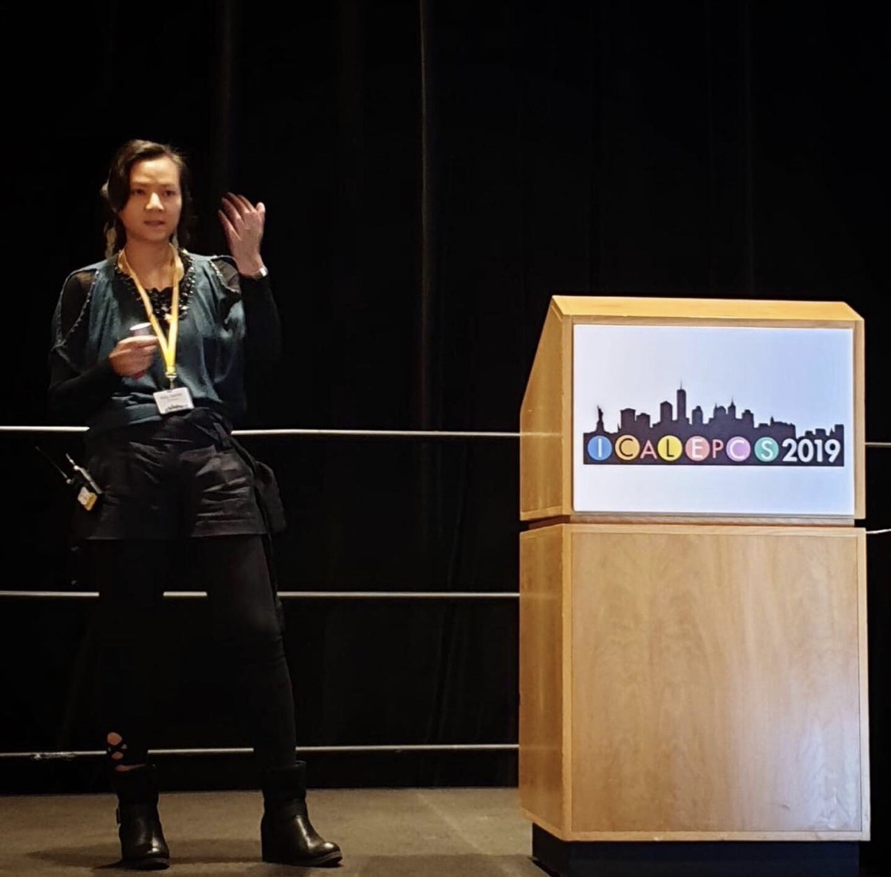
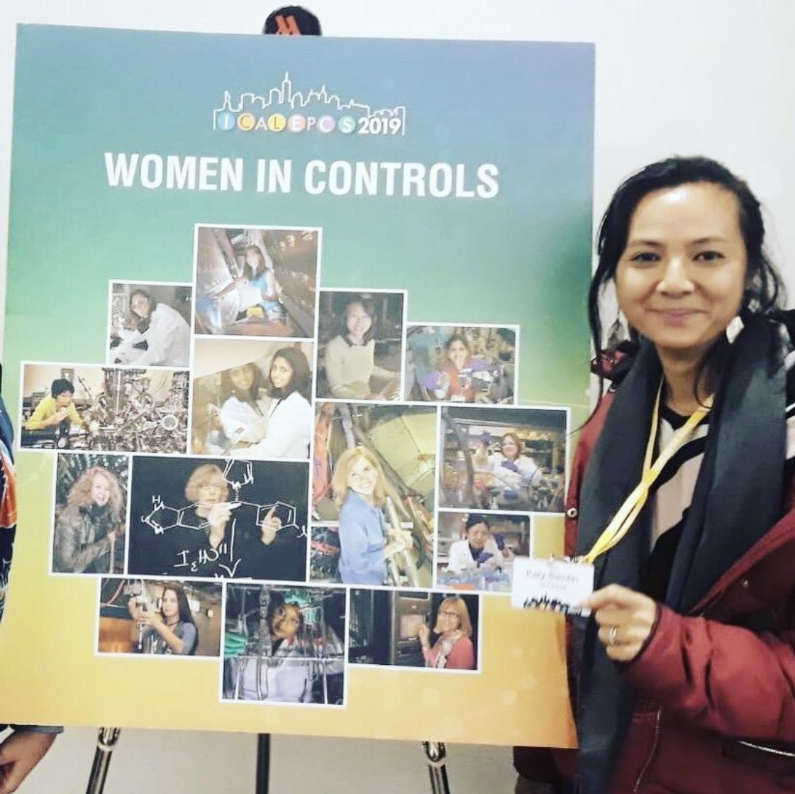

Katy In Control was born from a simple observation: the systems that run particle accelerators, synchrotrons, fusion reactors, and telescopes are among the most complex and fascinating engineering achievements of our time — and almost nobody outside the community has ever heard of them.
I've spent 25 years between EPICS, TANGO Controls, and MUSCADE. I've presented at ICALEPCS, NOBUGS, TANGO meetings, and EPICS collaboration meetings. I've written device servers, IOCs, HMIs, alarm systems, and archiving tools.
And every time I tried to explain what I do to someone outside the field, I watched their eyes glaze over at the word "SCADA."
So I decided to do something about it. With Star Wars analogies, The Persuaders!, a digital twin, and a lot of storytelling.
It started in 1998. I was a student at IUT de Cachan in electrical engineering and industrial computing, doing an internship at the Laboratoire Léon Brillouin (LLB) at CEA Saclay. The team was building control software for neutron spectrometers. Object-oriented programming in C++. CORBA. And a framework that would later look a lot like TANGO.
My mentor was Alain Buteau. Brilliant engineer. Great teacher. He had named his control program POOPS — standing for Programme Orienté Objet Pour le Pilotage de Spectromètre ("Object-Oriented Programme for Spectrometer Control"), and also in tribute to his son's favourite stuffed toy.
Alain was quite proud of the acronym. Logical. Descriptive. Personal. An English colleague pointed out, gently, that presenting POOPS at an international conference in the United Kingdom might raise a few eyebrows.
The programme was renamed before departure 😅. Some acronyms are better left unspoken.
In 2000, our team submitted a paper to NOBUGS 3 — New Opportunities for Better User Group Software — at Daresbury Laboratory, United Kingdom. The paper was on a new generation of object-oriented software for spectrometer control, based on CORBA and C++. A system that, looking back, was remarkably close to what TANGO would become.
I was 19 years old. It was my first international conference. Everything was in English. Technical English. In front of real scientists.
We arrived at Charles de Gaulle airport: Alain, my colleague Nathalie Ravenel, and me. At the gate, Alain reached for his ID card.
Expired.
The UK is not part of the Schengen zone. No boarding for Alain.
Nathalie and I looked at each other in silence. I was 19. My technical English was, generously speaking, a work in progress. Nathalie had her driving licence and kept her composure. She handled the logistics. I handled the poster session. Together, we managed to explain something coherent about object-oriented spectrometer control to a room full of engineers who were very politely pretending to understand us.
I have never forgotten that conference. Neither has Alain.
That trip taught me everything I needed to know about scientific conferences: the paper is the excuse. The conversations in the corridors, over bad coffee and worse food, are where things actually happen. That's still true today. At ICALEPCS, NOBUGS, EPICS meetings, TANGO meetings. The community is the real product.
-
1998 – 2001
Apprentice engineer — Laboratoire Léon Brillouin, CEA Saclay
Spectrometer control software in C++. First steps in scientific computing. Engineer's degree (CESI) by apprenticeship, September 2001. 2-month mission at ISIS Neutron Source, Daresbury — first international experience. -
2001 – 2004
Software consultant — ALTEN Technologies
Canal+ Technologies: HMI development for second-generation digital decoders. First Java. Eurocontrol: statistical library in C++ for air traffic simulation (GASEL project). -
2004 – 2017
Research engineer — Synchrotron SOLEIL
13 years with TANGO Controls across the accelerator and all beamlines. HMI specialist, Java applications lead, on-call support (24/7), ITIL, DevOps. Coordinator of the MAX-IV / SOLEIL collaboration. 3 ICALEPCS, 1 EPAC, 6 articles, 9 presentations. -
2017 →
Research engineer — IRFU/CEA Saclay (LDISC)
EPICS expert. Product owner of MUSCADE (90 servers, 40+ projects, 7 departments). CS-Studio contributor and CEA referent. TITAN main control system (2019). PLC Parser Tool presented at EPICS Collaboration Meeting ISIS, April 2025. Cited by Bob Dalesio at Oak Ridge National Laboratory. 2 nominations Expert CEA (2025).

The people who built EPICS and TANGO are approaching retirement. Bob Dalesio. Jens Meyer. Jeff Hill just retired. Marty Kraimer passed away in 2022.
The decisions they made in the late 1980s and 1990s — the architectural choices, the cultural norms, the reasons behind the tradeoffs — live in their memories. Not in the documentation. Not in the papers. In the people.
Katy In Control exists to capture those stories before they disappear. And to make them accessible to the next generation of engineers who will carry these systems forward.
— quoted by Bob Dalesio, co-creator of EPICS

Licence
Code — All source code for this website is licensed under the MIT License. Free to use, modify, and distribute.
Content — All educational content (scripts, episode guides, PDFs, visuals) is licensed under CC BY-NC 4.0. Share and adapt freely for non-commercial purposes, with attribution.
Biographies — Guest biographies on the Contributors page have been reviewed and validated by their subjects before publication.